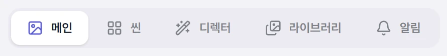
1탭 전환
메인, 씬, 디렉터, 라이브러리, 알림을 오가요. 한 번 연 탭은 그대로 남아 있어서 다시 돌아와도 스크롤 위치와 작업이 유지돼요.
- Ctrl 1 메인 · Ctrl 2 씬 · Ctrl 3 디렉터
- 안 쓰는 탭은 설정 → 모양 → 표시할 탭에서 숨길 수 있어요.
화면마다 어떤 기능이 어디에 있는지 사진으로 정리했어요. 전체 화면의 번호를 누르면 그 기능 설명으로 바로 가고, 사진을 누르면 크게 볼 수 있어요.
프롬프트를 쓰고 한 장씩 생성하는 기본 화면이에요. 왼쪽 패널에서 프롬프트와 옵션을 정하고, 가운데서 결과를 보고, 오른쪽 히스토리에서 지난 이미지를 다시 꺼내 써요.
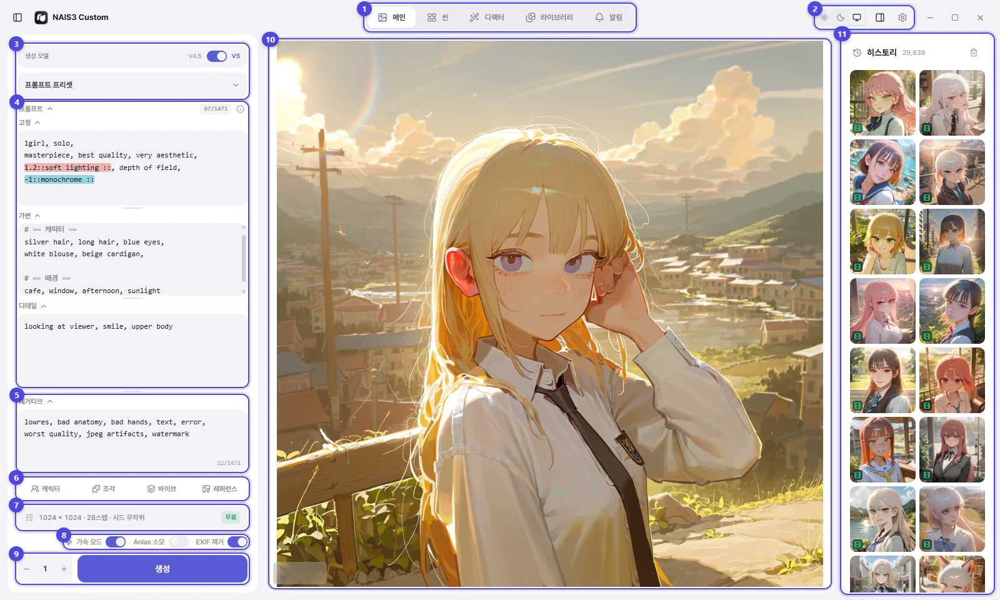

메인, 씬, 디렉터, 라이브러리, 알림을 오가요. 한 번 연 탭은 그대로 남아 있어서 다시 돌아와도 스크롤 위치와 작업이 유지돼요.
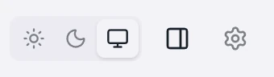
밝게, 어둡게, 시스템 설정 따름 중에서 고르고, 오른쪽 히스토리 패널을 접었다 펴고, 설정을 열어요. 왼쪽 위 버튼은 프롬프트 패널을 접어요.
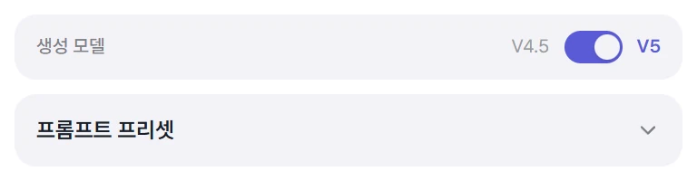
V4.5와 V5 중 생성 모델을 고르고, 자주 쓰는 프롬프트 묶음을 프리셋으로 저장했다가 불러와요.
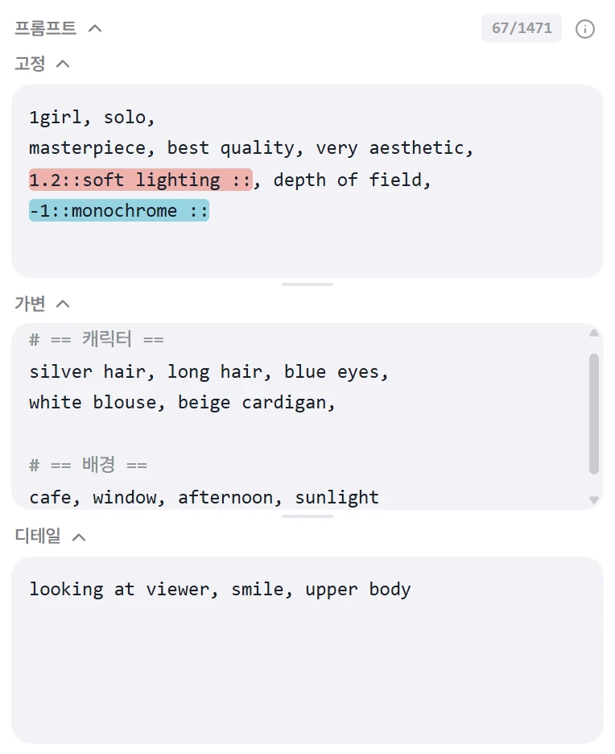
고정에는 항상 유지할 태그, 가변에는 매번 바꿀 태그, 디테일에는 품질·구도·세부 묘사를 적어요. 오른쪽 위 숫자는 토큰 수예요. 가중치를 준 태그는 색으로 표시돼요.
# 메모 | 줄 맨 앞의 #은 주석이라 보내지 않아요 |
<이름> | 조각 넣기. 조각이 여러 줄이면 생성할 때마다 한 줄을 무작위로 골라요 |
<*이름> | 조각의 줄을 생성마다 순서대로 사용 (Ctrl Shift R로 처음부터) |
<a|b|c> | 셋 중 하나를 무작위로 |
1.3::태그:: | 강조. 1보다 크면 강하게, 작으면 약하게, 음수도 돼요 |
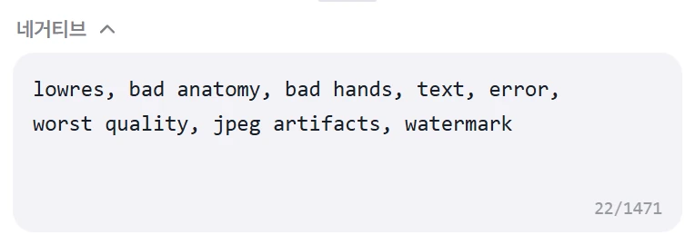
나오지 않았으면 하는 요소를 적어요. 생성 파라미터의 UC 프리셋 뒤에 이어 붙어요. 제목을 눌러 칸을 접을 수 있어요.
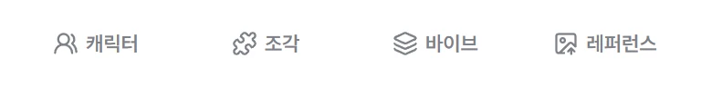
자주 쓰지 않는 도구라 한 줄로 얇게 모았어요. 누르면 프롬프트 자리에 목록이 열리고, 쓰고 있는 도구는 강조돼요.
<이름>으로 넣는 문구 모음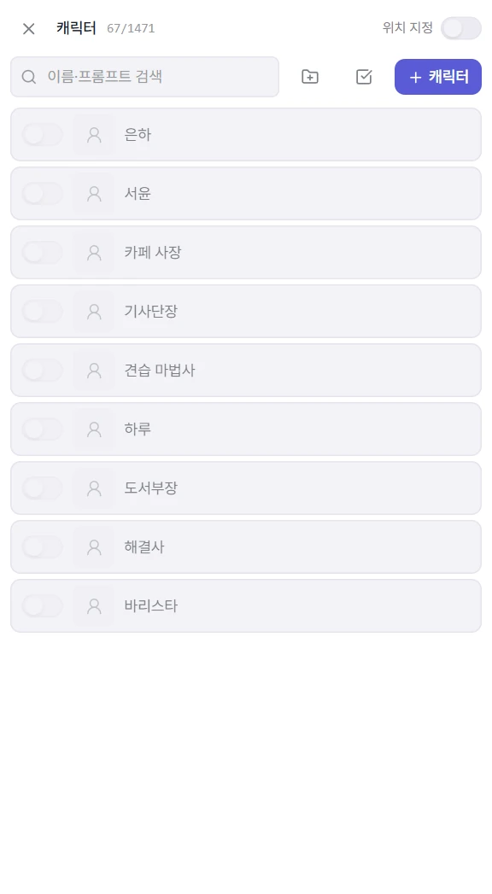
왼쪽 스위치를 켠 캐릭터만 생성에 들어가요. 이름이나 프롬프트로 찾고, 폴더로 묶고, + 캐릭터로 새로 만들어요. 위치 지정을 켜면 캐릭터마다 화면 속 위치를 정할 수 있어요.
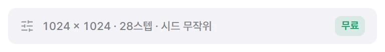
지금 설정의 해상도, 스텝, 시드를 한 줄로 보여주고, 오른쪽에 이번 생성이 무료인지 Anlas가 드는지 표시해요. 누르면 생성 파라미터 창이 열려요 (Ctrl P).
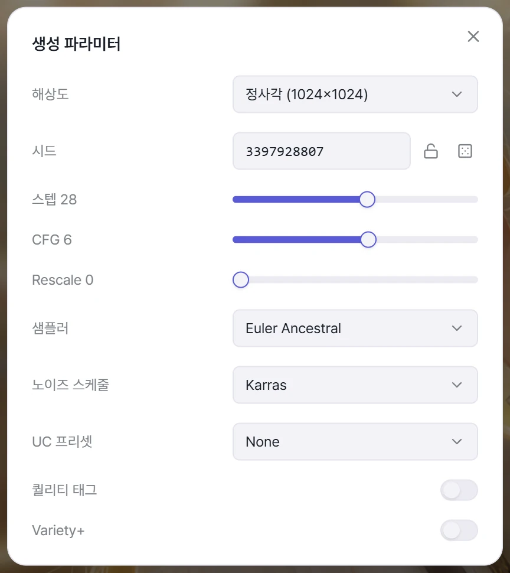
해상도, 시드(자물쇠로 고정), 스텝, CFG, Rescale, 샘플러, 노이즈 스케줄, UC 프리셋, 퀄리티 태그, Variety+를 정해요.
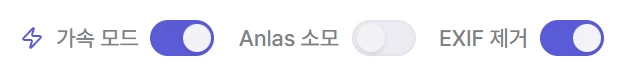
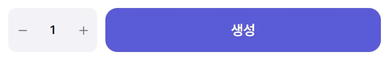
− + 로 한 번에 뽑을 장수를 정하고 생성을 눌러요 (Ctrl Enter). 씬 탭에서는 이 버튼이 씬 생성으로 바뀌어 예약한 장수만큼 차례로 뽑아요.
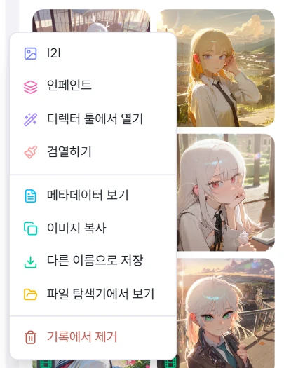
생성한 이미지가 최신순으로 쌓여요. 누르면 가운데에서 크게 보고, 오른쪽 클릭으로 바로 다음 작업을 이어가요.
씬마다 프롬프트와 해상도를 저장해 두고, 장수를 예약해 한꺼번에 뽑는 화면이에요. 씬 1,000개짜리 프리셋도 부드럽게 다룰 수 있어요.
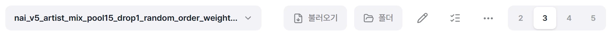
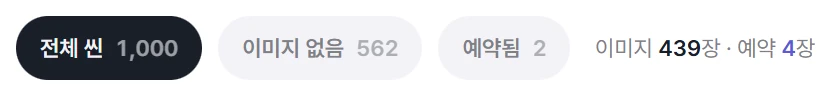
전체 씬, 이미지 없음, 예약됨으로 걸러 봐요. 씬 개수와 이미지 장수는 단위가 달라서 따로 보여줘요. 씬 1,000개에 이미지 439장, 예약 4장처럼요.
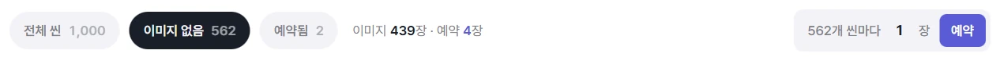
장수를 정하고 예약을 누르면 여러 씬에 한 번에 걸려요. 대상은 지금 보이는 씬이에요. 편집 모드에서 고른 씬이 있으면 그 씬, 필터를 켰으면 필터에 보이는 씬, 아니면 전체예요. 막대에 "562개 씬마다"처럼 대상 수가 떠요. 옆의 달력 버튼은 같은 대상의 예약을 취소해요.
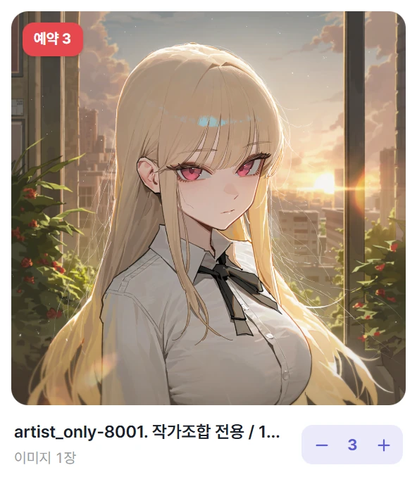
대표 이미지와 씬 이름, 이미지 장수를 보여줘요. 오른쪽 아래 − + 로 이 씬만 예약 장수를 바꾸고, 숫자를 눌러 직접 입력할 수도 있어요. 예약이 있으면 왼쪽 위에 빨간 예약 N 배지가, 생성 대기열에 들어간 뒤에는 남은 장수가 떠요.
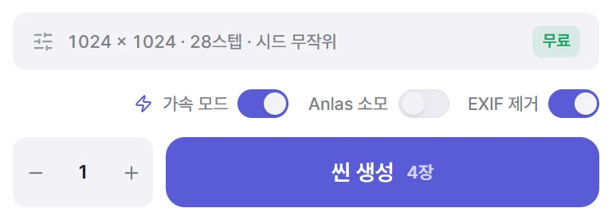
모든 프리셋에 걸린 예약을 합친 장수가 버튼에 떠요. 누르면 예약이 한꺼번에 생성 대기열로 넘어가고 카드의 예약 숫자는 0으로 돌아가요. 대기열에 남은 장수는 카드 왼쪽 위에 "대기 · 남은 N장"으로 보여요. 요약 줄은 씬마다 해상도가 다르면 최대 해상도를 기준으로 무료인지 알려줘요.
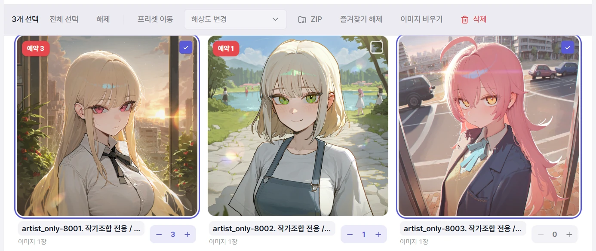
연필 버튼을 켜면 카드를 눌러 여러 씬을 고를 수 있어요 (Shift를 누르고 누르면 구간 선택). 고른 씬에 한 번에 적용할 수 있는 작업이 위에 나와요.
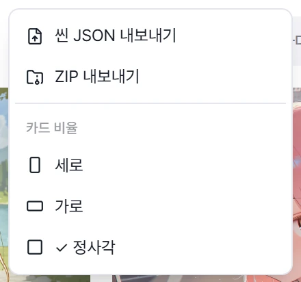
씬 목록을 JSON으로 내보내거나, 이미지를 ZIP으로 묶어요. 카드 비율은 세로, 가로, 정사각 중에서 골라요.
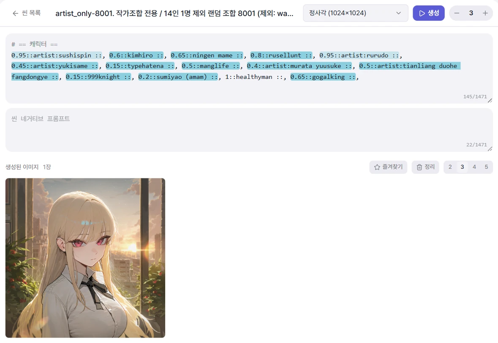
카드를 누르면 열려요. 이 씬만의 프롬프트와 네거티브, 해상도를 정하고, 오른쪽 위에서 장수를 정해 이 씬만 바로 생성해요. 아래에는 이 씬에서 나온 이미지가 모여요.
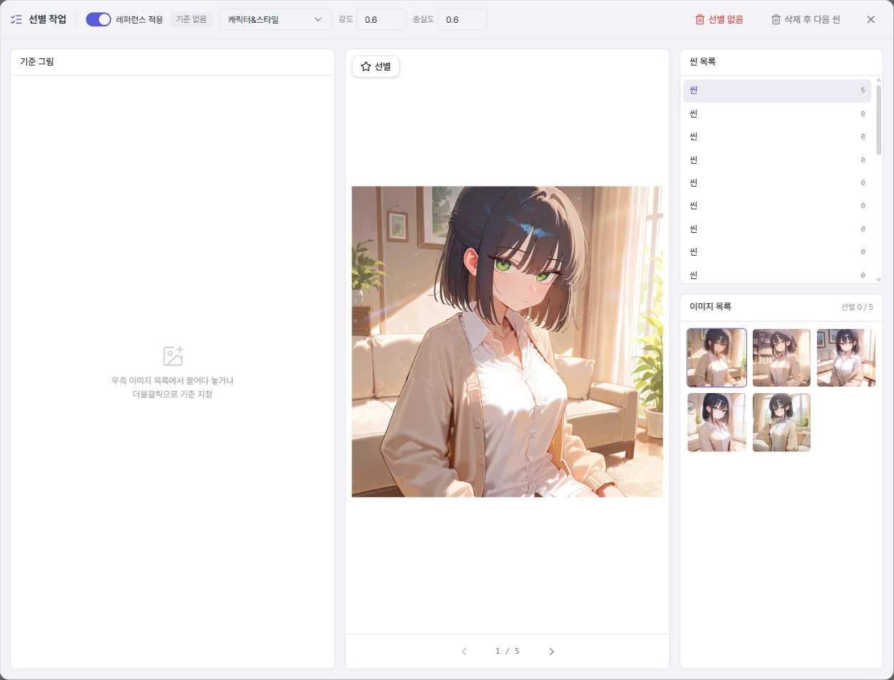
씬을 하나씩 넘기며 마음에 드는 이미지를 고르는 화면이에요. 가운데서 크게 보고, 오른쪽에서 씬과 이미지를 골라요.
이미 만든 이미지를 다듬는 도구 모음이에요. 히스토리나 라이브러리에서 오른쪽 클릭 → 디렉터 툴에서 열기로 가져오거나, 캔버스에 이미지를 끌어다 놓아요.
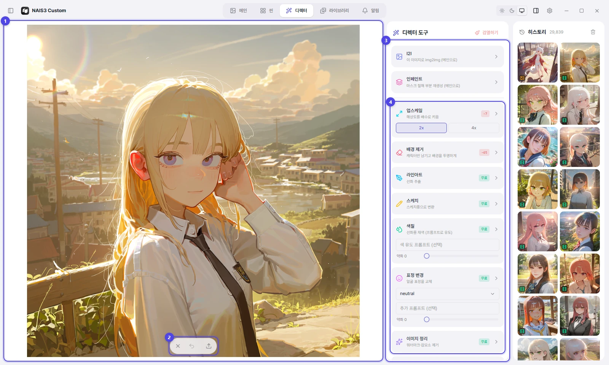
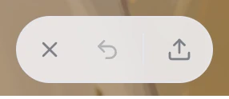
✕는 캔버스를 비우고, ↶는 도구를 쓰기 전 이미지로 되돌리고, ⤒는 다른 이미지를 열어요.
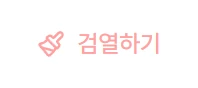
디렉터 도구 오른쪽 위에 있어요. 폴더를 골라 그 안의 이미지를 한꺼번에 검열해요.
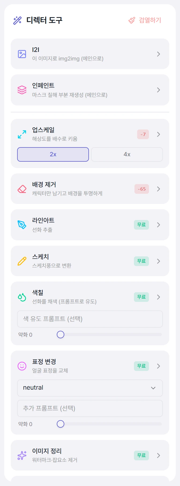
이 이미지를 메인 화면으로 보내 이어서 작업해요. I2I는 이미지를 바탕으로 다시 그리고, 인페인트는 마스크로 칠한 부분만 다시 그려요.
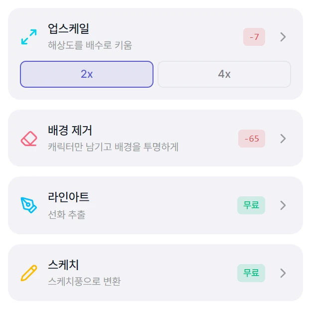
오른쪽 배지는 드는 Anlas예요. 무료는 Anlas가 들지 않아요.
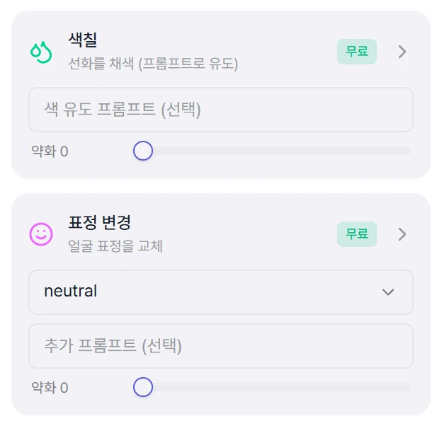
색칠은 선화에 색을 입혀요. 원하는 색을 프롬프트로 적을 수 있어요. 표정 변경은 목록에서 표정을 고르고 필요하면 프롬프트를 더해요. 두 도구 모두 약화로 원본에서 얼마나 바꿀지 조절해요.
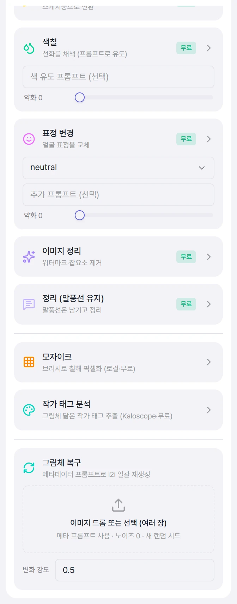
지금까지 만든 모든 이미지를 날짜와 가상 폴더로 나눠 보는 곳이에요. 수만 장이 있어도 필요한 만큼씩 불러와서 가볍게 움직여요.
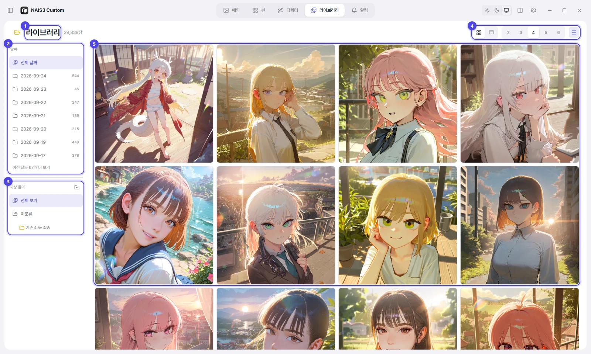
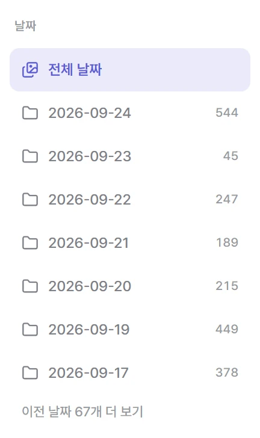
날짜를 누르면 그날 만든 이미지만 보여요. 오른쪽 숫자는 장수예요. 7일이 지난 날짜는 접혀 있고 이전 날짜 더 보기로 펼쳐요.
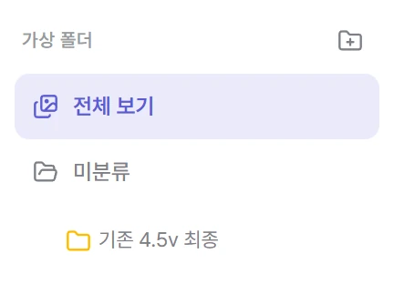
실제 파일은 옮기지 않고 앱 안에서만 이미지를 폴더로 묶어요. 오른쪽 위 버튼으로 폴더를 만들고, 폴더 안에 폴더를 둘 수도 있어요. 미분류는 아직 폴더에 넣지 않은 이미지예요.
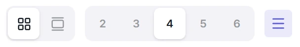
왼쪽 두 버튼으로 보기 방식을 고르고, 한 줄에 놓을 이미지 수를 2~6개로 정해요.
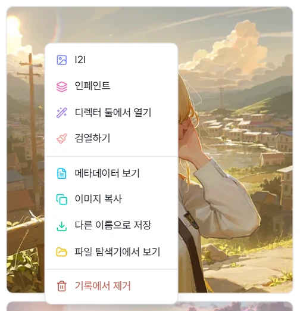
히스토리와 같은 메뉴예요. I2I, 인페인트, 디렉터, 검열로 바로 넘기고, 메타데이터를 보거나 파일 위치를 열 수 있어요.
에덴, 베이비챗, 루나, 엘린, 네코, 티팟, 크랙, 알플레이, 젠잇의 알림을 한곳에 모아 보고, 댓글에는 여기서 바로 답글을 달아요. 각자 자기 계정으로 로그인해서 쓰고, 로그인 정보와 알림은 내 PC에만 저장돼요.
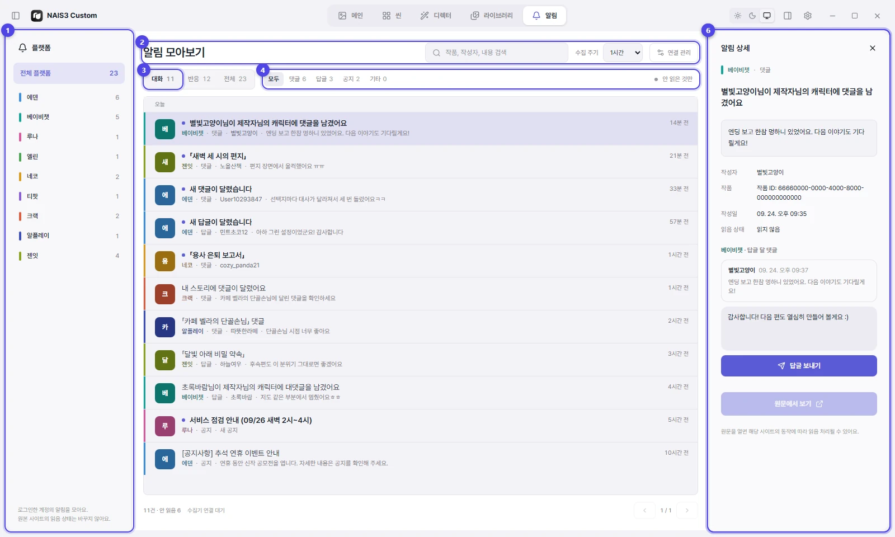
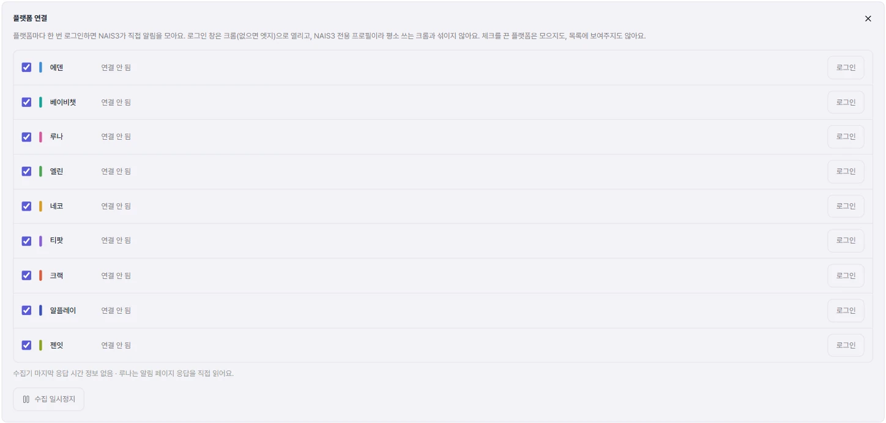
쓰는 플랫폼마다 로그인을 누르면 크롬(없으면 엣지) 창이 열려요. NAIS3 전용 프로필이라 평소 쓰는 크롬과 섞이지 않아요. 그 창에서 로그인하면 NAIS3가 알아서 연결하고 창을 닫아요.
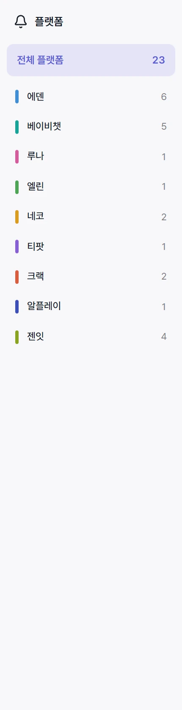
플랫폼을 누르면 그 플랫폼 알림만 보여요. 숫자는 알림 수예요. 원본 사이트의 읽음 상태는 바꾸지 않아요.
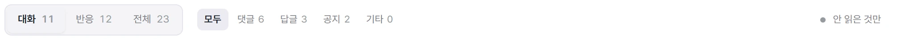
대화에는 댓글, 답글, 공지가, 반응에는 좋아요와 팔로우가 모여요. 반응이 훨씬 많아서 댓글이 묻히지 않도록 나눴어요. 오른쪽에서 종류를 더 좁히고, 안 읽은 것만 볼 수도 있어요.
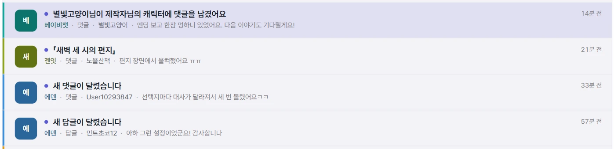
한 줄에 제목, 플랫폼·종류·작성자, 내용 미리보기가 들어가요. 왼쪽 색 막대와 동그라미로 플랫폼을 알아보고, 작품 썸네일이 있으면 동그라미 대신 작품 이미지가 떠요. 파란 점은 안 읽은 알림이에요.
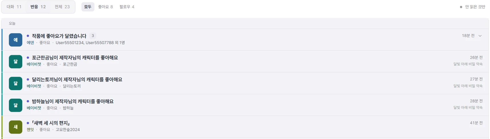
같은 작품에 연달아 온 같은 반응은 한 줄로 묶어요. "User…, User… 외 1명"처럼 보이고, 오른쪽 ⌄를 누르면 펼쳐져요.
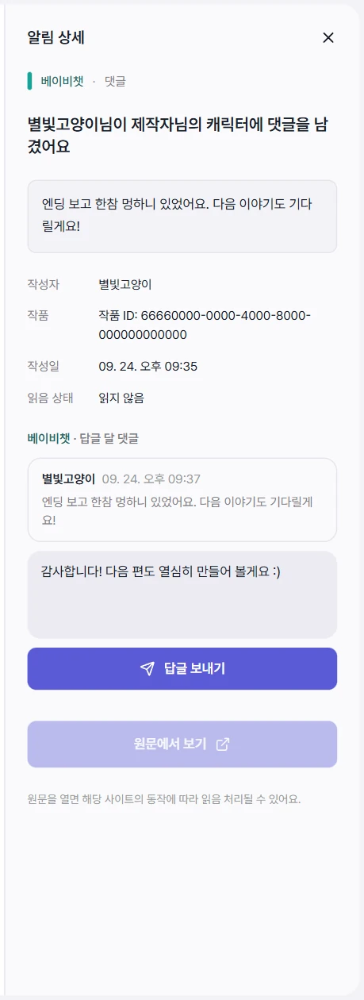
알림을 누르면 오른쪽에 전체 내용과 작성자, 작품, 작성 시각이 나와요. 원문에서 보기로 해당 사이트의 그 위치를 열어요.
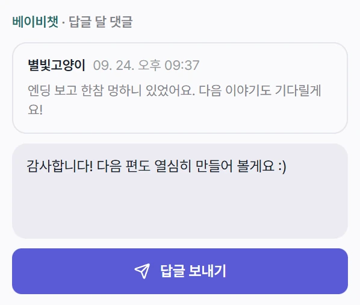
댓글 알림이면 답글 칸이 나와요. 보내기 전에 어떤 댓글에 다는지 원래 댓글을 먼저 보여주고, 확인되기 전에는 버튼이 꺼져 있어요. Ctrl Enter로 보내요.
오른쪽 위 톱니바퀴(Ctrl ,)로 열어요.
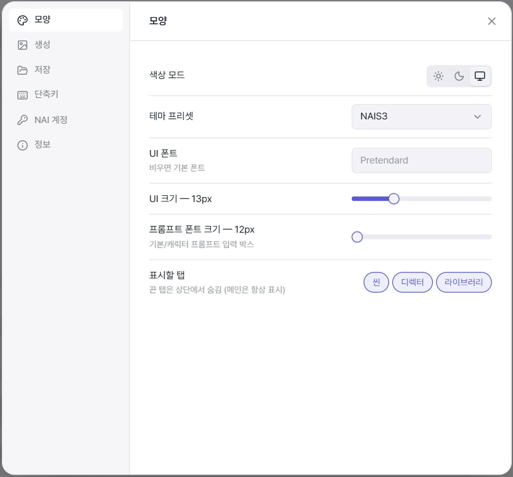
색상 모드, 테마 프리셋, 글꼴과 글자 크기, 프롬프트 칸 글자 크기, 상단에 보여줄 탭을 정해요.
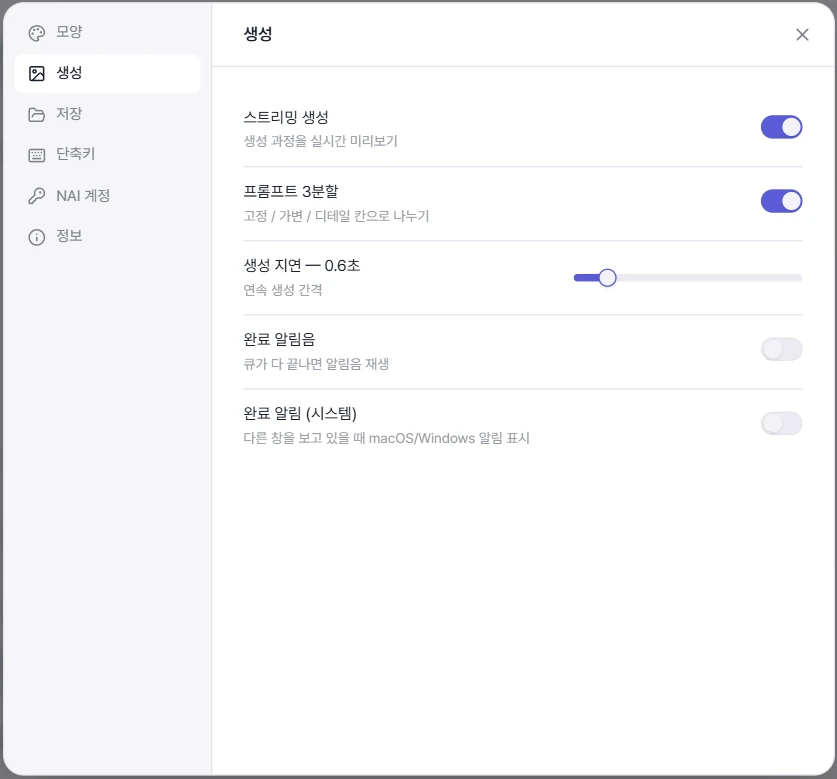
생성 과정을 실시간으로 보는 스트리밍 생성, 프롬프트 3분할, 연속 생성 사이 간격, 다 끝났을 때 알림음과 Windows 알림을 정해요.
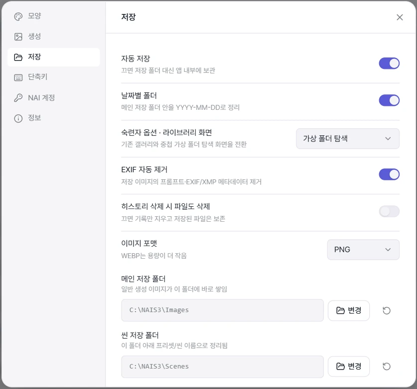
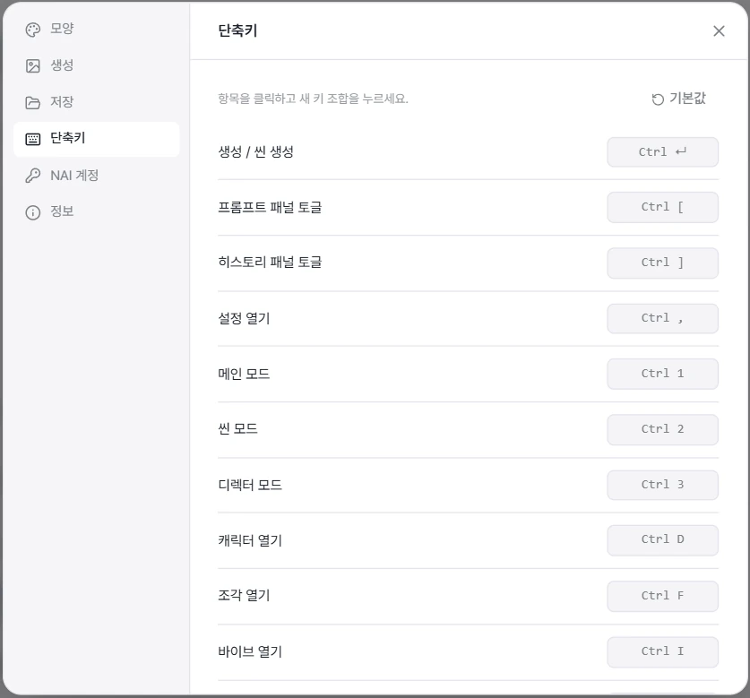
항목을 누르고 새 키 조합을 누르면 바뀌어요. 기본값으로 되돌릴 수 있어요. F5는 작업 새로고침과 큐 초기화예요.
오른쪽 위 달 모양을 누르면 어두운 화면으로 바뀌어요. 시스템 설정 따름을 고르면 Windows 설정을 따라가요.
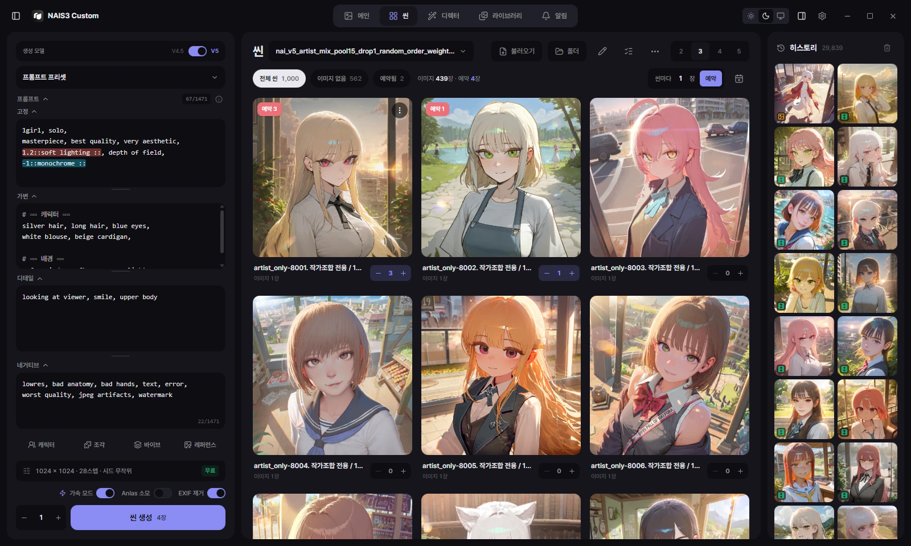
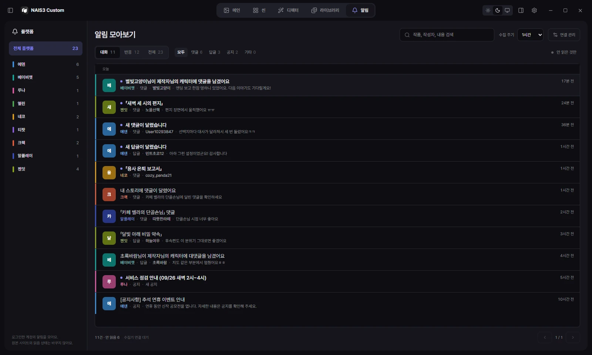